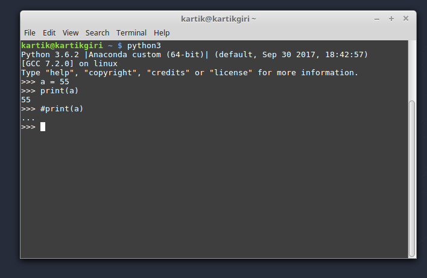

Comment is a line that is not executed by the interpreter. They are added with the purpose of making the code easier to understand
Comments in Python start with the hash character, #, and extend to the end of the physical line.
In the following image the statement after the Hash (#) character is not executed by the interpreter.
Open terminal and type python ( or python3 if you have python2 and python3 both installed in a system).
Write print('Hello World') without the commas.

'print('')' statement or function displays whatever is been kept inside the parenthesis.
For more on Print statements visit this link